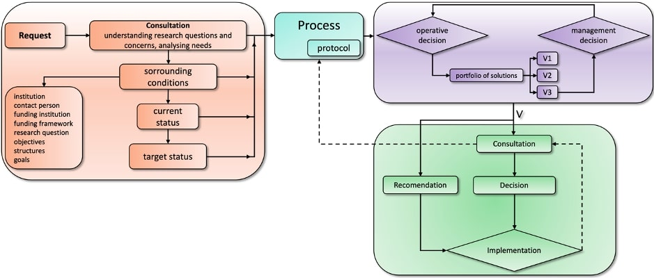
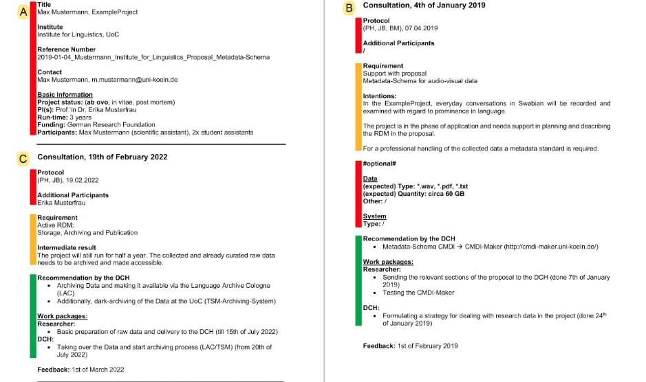
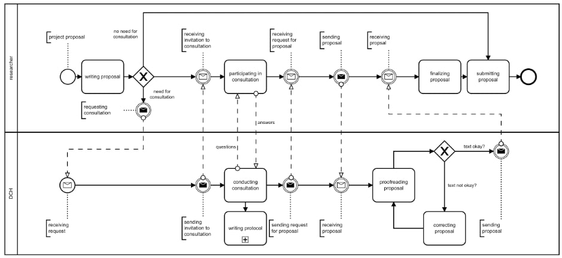
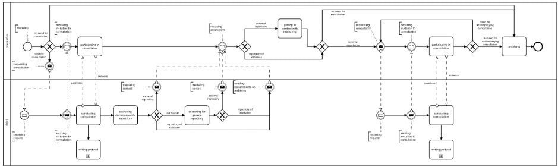

Abstract
Research data management (RDM) is becoming more important for researchers and research institutions like universities and non-university centers. Due to the heterogeneity of methods in the Humanities, RDM in the Humanities is very complex. Several data centers and contact points have been established to handle this complexity, support researchers and conduct active RDM. Nevertheless, there are few best practices and policies on how RDM is done in a sustainable and goal-oriented way. In this paper I present a consultation-protocol-template we developed at the Data Center for the Humanities (DCH) at the Faculty of Arts and Humanities at the University of Cologne (UoC) to structure and measure RDM in a comprehensive way. I illustrate generic RDM-consultation-workflows developed on the basis of our consultations.
1. Introduction and Background
Research data is an essential ingredient and facilitator of scientific progress across all disciplines and includes heterogenous data (Bryant, Lavoie, Malpas, 2017). The developments of the European Open Science Cloud (EOSC) and OpenAIRE, and the plans to establish a national research data infrastructure (NFDI) for the whole German research landscape (RfII, 2016) illustrate that the relevance of RDM has reached a high political level, nationally and internationally.1 However, this is a rather new development and practical implementation has not yet reached maturity.
The Data Center for the Humanities (DCH) is the first contact point for researchers in the Humanities at the University of Cologne (UoC) on questions concerning we (Blumtritt, Helling, Mathiak et. al., 2018).2 Through open consultation hours the DCH advise researchers at the Faculty and beyond, attend to their projects and support them as far as RDM is concerned. In addition, we run the Language Archive Cologne (LAC), a repository for audio-visual data, we do active data management and curate, archive and publish research data.4
In this paper, I seek to further the professionalization of RDM, by looking closer at the consultation process and the experiences made with it at our institution in 6 years of consultation practice.
2. RDM consultation protocols
In order to identify goal-oriented solutions for RDM-needs and as a basis for active RDM, we developed a consultation-workflow (see Figure 1). Through semi-structured interviews and structured consulting protocols, we are offering sustainable RDM-services and -solutions (Helling, Blumtritt and Mathiak, 2018). With more than 70 consulting protocols, the DCH has a wealth of knowledge.

Figure 1: The core consulting-workflow at the DCH.
On the basis of a comparative analysis of the structured consulting protocols, I was able to identify the core information required for active RDM. The information can be subsumed under the categories (red) context information of a process, (yellow) RDM request-categories with a concrete description of the categories in the context of a consultation and (green) recommendations (see Figure 2).

Figure 2: anonymous example of the consulting protocol template: (A) consists of meta information about a process, (B) and (C) are both consulting protocols of a process.
3. Modelling of RDM-consultation workflows
In 2019, I identified 28 demand-categories in 36 consultations. I started modelling generic workflows for each demand-category fitting with every consultation, where the demand was given with the help of the Business Process Model and Notation (BPMN).4 I will only illustrate on two examples in this abstract, but plan to show more in the presentation.
3.1. Support with a proposal
Many funding institutions ask for statements on how researchers will deal with the digital research data representing the output of an applied project. If a consultation is needed in such a case, we conduct an interview with the researchers and try to receive as much information as possible about the project, which we translate into our consultation-protocol-template.

Figure 3: Consultation workflow for support with a proposal.
Based on the information in the protocol, we then follow the steps as detailed in Fig. 3, always taking the context information into account. Based on similar cases, we suggest a text to describe possible strategies for data management and define fundamental steps of data handling, archiving and publishing.
These formulations get integrated into the overall application by the researchers and thus become part of the proposal.
3.2. Data archiving
Another common request is the archiving (see Figure 4) of data at the end of a project. After the generic steps of a workflow described already, we start to search for a fitting repository with respect to the conditions of the actual data and the whole project.

Figure 4: Consultation workflow for data archiving.
We developed a system of priorities that we work through step by step: at first, we check if we can identify a (1) domain-specific repository that fits with the given needs and conditions. In our case, this can be the LAC, or an external repository. If there is no solution, we check if there is a fitting (2) generic repository. In our case, this can only be an external repository, but, in the context of another data center, it could be a generic repository driven by the data center.
In any case the results of the investigation need to be passed to the researchers: either we mediate a contact to an external repository, or we present information about the conditions of archiving data in the LAC.
Conclusion
The formal description of our workflows optimizes both consultations and active RDM. The workflows follow acknowledged standards as well as know-how and experiences made by data managers since 2013. Thanks to these procedures, we are able to deal with the diversity of RDM-requirements in the Humanities in an effective and standardized way and we can handle different consultations with the same or a similar request equally. This makes RDM measurable and comprehensible. Because of the abstract level of modelling, the workflows are generic and can be adapted in different contexts.
In my talk, I will present more workflow models and in a more detailed way. Contextually, I will define RDM-requirements and -services based on active data management in a comprehensive way and show synergies between different needs and service structures. This will lead me to a plea for the necessity of measurable RDM-structures based on RDM done in expert centers by data manager, as opposed to the common approach of building and establishing contact points and training a mediating data manager based on recommendations of political and scientific committees and umbrella organizations that are not closely related to daily research and RDM.
Footnotes
[1] European Open Science Cloud (EOSC), Online: https://ec.europa.eu/research/openscience/index.cfm?pg=open-science-cloud (last request: 2nd October 2019); OpenAIRE, Online: https://www.openaire.eu/ (last request: 2nd October 2019); National Research Data Infrastructure (NFDI), Online: https://www.dfg.de/foerderung/programme/nfdi/ (last request: 2nd October 2019).
[2] Data Center for the Humanities (DCH), Online: http://dch.phil-fak.uni-koeln.de/index.html (last request: 2nd October 2019).
[3] Language Archive Cologne (LAC), Online: https://lac.uni-koeln.de/ (last request: 2nd October 2019).
[4] cf. Silvere, Bruce. BPMN method and style. Cody-Cassidy Press, Aptos, CA 2009.
Bibliography
Blumtritt, J., Helling, P., Mathiak, B. et. al. (2018): Forschungsdatenmanagement in den Geisteswissenschaften an der Universität zu Köln, in: o-bib, Das offene Bibliotheksjournal, P. 104-117. DOI: https://doi.org/10.5282/o-bib/2018H3S104-117.
Bryant, R., Lavoie, B., Malpas, C. (2017): A Tour of the Research Data Management (RDM) Service Space. The Realities of Research Data Management, Part 1. Dublin, Ohio: OCLC Research. DOI: https://doi.org/10.25333/C3PG8J.
Helling, P., Blumtritt, J., Mathiak, B. (2018): Der Beratungs-workflow des Data Center for the Humanities an der Universität zu Köln, in: o-bib, Das offene Bibliotheksjournal, P. 248-261. DOI: https://doi.org/10.5282/o-bib/2018H4S248-261.
RfII (2016): Leistung aus Vielfalt. Empfehlungen zu Strukturen, Prozessen und Finanzierung des Forschungsdatenmanagements in Deutschland, Göttingen, 160 S. Online: http://www.rfii.de/?p=1998 (last request: 2nd of October 2019).